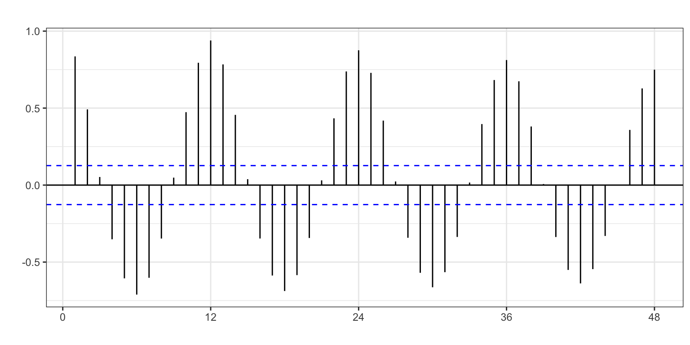
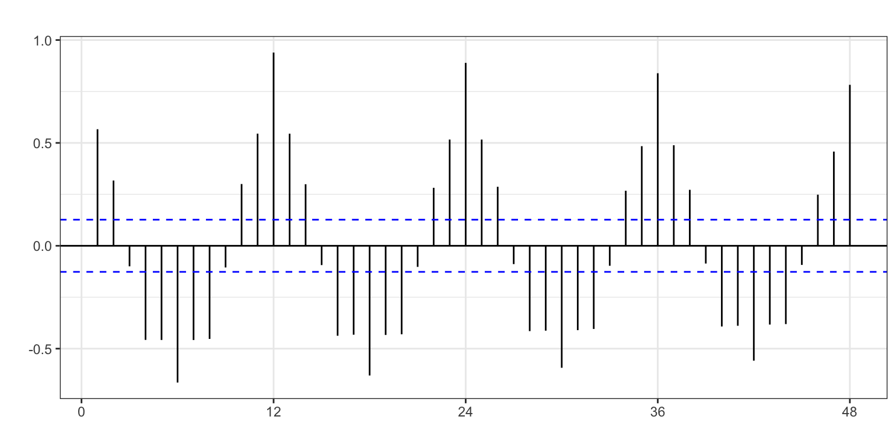
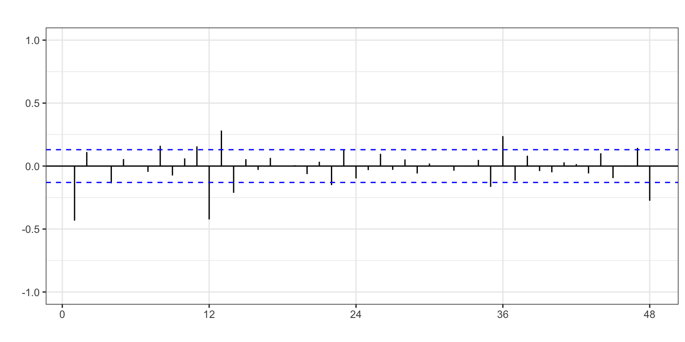
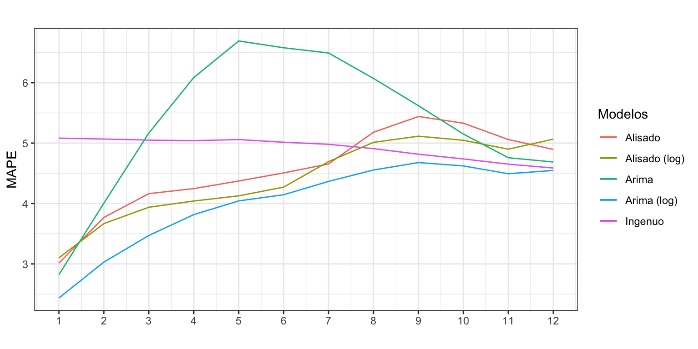

Pernoctaciones en alojamientos turísticos de turistas extranjeros
Procesos ARIMA con estacionalidad
Author
Iván Arribas (Depto. Análisis Económico. Universitat de València)
1 Introducción
Consideremos de nuevo la serie temporal correspondiente al número de pernoctaciones que los turistas extranjeros realizan en España en alojamientos turísticos autorizados (que llamaremos Pernoctaciones en adelante). Esta serie está disponible en Eurostat desde enero de 2000 hasta diciembre de 2022, un total de 23 años y 276 observaciones.
La serie temporal muestra una tendencia suavemente decreciente en el número de pernoctaciones en la primera década del presente siglo. Con el cambio de década se produce un cambio en la tendencia, que pasa a ser creciente. A finales de la década pasada se observa una caída en el número de pernoctaciones y en los últimos años el efecto de la Covid-19 y posterior recuperación. El esquema es multiplicativo.
Para este análisis consideraremos la serie hasta diciembre de 2019, eliminando el periodo afectado por la pandemia de Covid-19. Posteriormente usaremos las predicciones para los años 2020 a 2022 para cuantificar el efecto de la pandemia sobre las pernoctaciones y su impacto económico.
El esquema multiplicativo de la serie aconseja el uso de la transformación logarítmica. Además, vamos a ver que para que la serie sea estacionaria es necesario diferenciarla tanto regular como estacionalmente, así que el uso de logaritmo vuelve a ser aconsejable si queremos ganar en interpretabilidad.
La Figura 2 muestra la FAC para la serie Pernoctaciones (log) y algunas de sus transformaciones. En los paneles a) y b) las autocorrelaciones estacionales decrecen muy lentamente, indicando que la serie analizada no es ergódica. El panel c) muestra que las autocorrelaciones en la parte regular decrecen lentamente, indicando que la serie analizada no es estacionaria. Solo la doble diferenciación regular y estacional de la serie muestra un rápido descenso en los coeficiente de autocorrelación (panel d), indicando que la serie así transformada es estacionaria en media y ergódica.
ggAcf(log(Pernoctacionesb), lag =48, xlab ="", ylab ="", main ="")ggAcf(diff(log(Pernoctacionesb)), lag =48, xlab ="", ylab ="", main ="")ggAcf(diff(log(Pernoctacionesb), lag =12), lag =48, xlab ="", ylab ="", main ="")ggAcf(diff(diff(log(Pernoctacionesb), lag=12)), lag =48, xlab ="", ylab ="", main ="")

(a) Log serie

(b) Dif. regular log serie
(c) Dif. estacional log serie

(d) Dif. regular y estacional log serie
Figura 2: FAC para Pernoctaciones
Por otro lado, la identificación automática de la diferenciación también concluye que es necesaria la doble diferenciación.
ndiffs(log(Pernoctacionesb))
[1] 1
nsdiffs(log(Pernoctacionesb))
[1] 1
Vamos a asumir que el proceso debe ser doblemente diferenciado \(\log(Pernoctaciones) \sim I(1)I_{12}(1)\).
2.2 Identificación del orden regular y estacional
Vamos a identificar los valores de \(p\), \(q\), \(P\) y \(Q\). Para ello solicitaremos con auto.arima y seas una identificación automática.
Con auto.arima incluiremos dos efectos calendarios, uno para el número de días del mes y otro para el efecto Semana Santa.
DiasMes <-monthdays(Pernoctacionesb)SemanaSanta <-easter(Pernoctacionesb)auto.arima(Pernoctacionesb, d =1, D =1,lambda =0,xreg =cbind(DiasMes, SemanaSanta))
La función auto.arima identifica un proceso \(ARIMA_{12}(0,1,1)(2,1,2)\), donde el coeficiente para sar2 no parece ser significativo (el coeficiente no supera los dos errores estándar).
La identificación alcanzada por seas es un proceso \(ARIMA_{12}(0,1,1)(0,1,1)\) (modelo de las aerolíneas) de la transformación logarítmica, con intervención en Semana Santa y días laborables. Además, se identifica un cambio de nivel desde marzo de 2005.
summary(seas(Pernoctacionesb))
Call:
seas(x = Pernoctacionesb)
Coefficients:
Estimate Std. Error z value Pr(>|z|)
Weekday -0.0009593 0.0003988 -2.406 0.016143 *
Easter[8] 0.0425480 0.0051831 8.209 0.000000000000000223 ***
LS2005.Mar -0.0819394 0.0225926 -3.627 0.000287 ***
MA-Nonseasonal-01 0.2976707 0.0633552 4.698 0.000002621542191344 ***
MA-Seasonal-12 0.4286878 0.0590994 7.254 0.000000000000405599 ***
---
Signif. codes: 0 '***' 0.001 '**' 0.01 '*' 0.05 '.' 0.1 ' ' 1
SEATS adj. ARIMA: (0 1 1)(0 1 1) Obs.: 240 Transform: log
AICc: 6634, BIC: 6654 QS (no seasonality in final): 0
Box-Ljung (no autocorr.): 38.2 * Shapiro (normality): 0.9964
Messages generated by X-13:
Warnings:
- At least one visually significant trading day peak has been
found in one or more of the estimated spectra.
Vemos que ambas identificaciones difieren notablemente. Así, vamos a partir de la identificación obtenida por seas, el clásico modelo de las aerolíneas: \[log(Pernoctaciones) \sim ARIMA_{12}(0,1,1)(0,1,1)\].
Respecto de la intervención, incluiremos días del mes y Semana Santa. No se incluirá el cambio de nivel identificado por seas dado que no existe una justificación para ello. En 2005 no ocurrió nada que justifique una caída permanente del 8.2% en el número de pernoctaciones internacionales (coeficiente -0.0819).
3 Estimación
Antes se estimar el modelo identificado, vamos mejorar la implementación del efecto de la Semana Santa. Para ello, vamos a crear una variable que permita estimar el efecto del periodo de dos semanas que comprende Semana Santa y Pascua. Es decir, el periodo que va desde el lunes previo a Semana Santa hasta el Viernes posterior a Domingo de Resurrección. Esta nueva variable (SemanaSanta) valdrá cero para los meses distintos de marzo y abril; para marzo valdrá la proporción de días vacacionales que recaen en marzo; y para abril la proporción de días vacacionales que caen el abril.
La librería timeData proporciona una serie de funciones que permiten definir un calendario de festividades, identificar los fines de semana, etc. En concreto la función isBizday permite saber si un día es festivo (a partir de un calendario de festivos) e identificar los días laborables; y la función Easter permite identificar donde ha caído la Semana Santa.
El proceso seguido es el siguiente:
Con Easter se define la festividad de cada día del periodo considerado.
Por claridad, cada festivo se ha definido de forma independiente para después crear una variable con todos los festivos de Semana Santa (SemanaSanta).
El rango para todos los cálculos va desde 2000 hasta 2022 que incluye el rango de la serie Pernoctaciones más tres años de predicción.
A continuación, con timeSequence se crea una serie diaria desde el 1 de enero de 2000 hasta el 31 de diciembre de 2022.
Las dos siguientes líneas de código eliminan de la serie diaria los festivos de Semana Santa, para después dar a esta nueva serie abreviada el formato año-mes eliminando el día. De esta forma, la serie abreviada tendrá el mismo identificador para todos los días del mismo mes.
El argumento wday = 0:6 de la función isBizday indica que se deben preservar todos los días de la semana. Cuando se usa este argumento hay que tener en cuenta que el domingo es el día 0 y el sábado el día 6. Así wday = 1:5 dejaría todos laborables de la semana y wday = c(0, 6) solo los fines de semana.
Después, se crea una tabla que, por la naturaleza de la serie abreviada, tendrá para cada año-mes el numero de días del mes, excepto para marzo y abril que tendrán el número de días del mes que no caen en Semana Santa.
Fechamos la tabla, que es nuestra serie de días del mes sin Semana Santa.
Mostramos los resultados de este proceso para ayudar a entenderlo. Observa que para todos los meses de año excepto marzo y abril, lo que tenemos es simplemente el número de días del mes. Para marzo y abril tenemos el número de días del mes excepto los festivos de Semana Santa. Por ejemplo, en 2002 la Semana Santa cayó entre marzo y abril, de forma que los días no festivos en marzo fueron 24 y en abril 25.
Las siguientes líneas calculan que proporción de días de Semana Santa caen en cada mes y generan el efecto SemanaSanta: para marzo valdrá la proporción de días vacacionales que recaen en marzo y lo mismo para abril. Por ejemplo, en 2002 siete días de la Semana Santa cayeron en marzo y cinco en abril, es decir, 0.58 días en marzo y 0.42 en abril.
Las dos últimas líneas de código parten la serie en el periodo muestral y el de predicción.
Se observan dos valores claramente extremos en marzo de 2005 y mayo de 2013. Al estimar un nuevo modelo incluyendo estas dos intervenciones, el análisis del error revela una nueva intervención en abril de 2006, por lo que vamos a aprovechar para incluirla ya.
La Figura 4 indica que aún hay candidatos a valores atípicos. Como ninguno alcanza las tres desviaciones típicas, vamos a dar por concluido este proceso.
Para un nivel de significatividad del 5% todos los coeficientes del modelo son significativos, excepto el de abril de 2006. Sin embargo, dejaremos esta variable ficticia por ser significativa al 10% y estar asociada a un error notoriamente elevado.
4 Validación
Analizando los criterios de bondad de ajuste se tiene que: el error medio (ME), igual a -10132.57 pernoctaciones, es prácticamente cero (en relación a los valores de la serie) por lo que no parece que haya sesgo en las predicciones; en media nos equivocamos en 606 mil pernoctaciones (RMSE); y el error porcentual medio es 2.2%, muy bajo.
accuracy(Arima2)
ME RMSE MAE MPE MAPE MASE ACF1
Training set -10132.57 606418 443952.6 -0.04 2.19 0.49 0
5 Ecuación del modelo identificado
Ahora que ya hemos dado por válido el modelo, veamos cuál es su ecuación.
Si se desarrolla el modelo y se deja en función de la tasa de variación anual del número de pernoctaciones, queda (la parte de intervención no cambia):
La tasa de variación anual de las pernoctaciones de un año es la misma que la del año pasado. Es decir, las pernoctaciones evolucionan a tasa constante.
Si en periodos previos se ha producido un shock, hay que tenerlo en cuenta en las predicciones.
Cada día del mes adicional las pernoctaciones aumentan un 2.8%. De otra forma, cada día del mes la tasa de variación anual de las pernoctaciones aumenta 2.8 puntos porcentuales.
En el mes en que cae la Semana Santa las pernoctaciones aumentan un 5.6% (la tasa variación anual de las pernoctaciones aumenta 5.6 puntos porcentuales).
En marzo de 2005 las pernoctaciones fueron significativamente menores de la esperado (6.2%).
En abril de 2006 y mayo de 2013 las pernoctaciones fueron significativamente mayor de la esperado (3.7% y 5%, respectivamente).
6 Predicción de las pernoctaciones
Una vez dado por válido el modelo, podemos pasar a realizar predicciones para los próximos años. Para días del mes generaremos para el periodo de previsión su correspondiente variable de intervención; para Semana Santa usaremos en las predicciones la variable antes generada; y para el resto de la intervención fijaremos sus valores previstos a cero.
A partir de las predicciones podemos evaluar el efecto que la pandemia de la Covid-19 tuvo sobre las pernoctaciones.
aggregate(Pernoctaciones - pArima2$mean, FUN = sum) /1000000
Time Series:
Start = 2020
End = 2022
Frequency = 1
[1] -245.15718 -195.30848 -42.38915
En 2020 la caída estimada de las pernoctaciones fue de 245 millones y en 2021 de 195 millones. El efecto de la pandemia casi había desaparecido en el año 2022, con una caída de las pernoctaciones respecto de los valores previstos de 42 millones.
7 Comparación con otros modelos
7.1 Calidad de ajuste
La serie Pernoctaciones la hemos ajustado por el método ingenuo con estacionalidad, el método de Alisado Exponencial y procesos ARIMA. La Tabla 1 recoge el error medio (RMSE) y porcentual (MAPE) al usar estas tres aproximaciones con la serie original y su transformación logarítmica.
Tabla 1: Criterios de calidad para previsiones intramuestrales a un periodo vista. Varios modelos
Serie
Método
RMSE
MAPE
Pernoctaciones
Ingenuo
1243441
4.60
log(Pernoctaciones)
Ingenuo
1243441
4.60
Pernoctaciones
Alisado
727645
2.61
log(Pernoctaciones)
Alisado
738036
2.62
Pernoctaciones
ARIMA
620624
2.53
log(Pernoctaciones)
ARIMA
606418
2.19
Podemos extraer varias conclusiones: i) la transformación logarítmica no mejora necesariamente el ajuste de los datos; ii) el proceso ARIMA con transformación logarítmica es el modelo con mejor ajuste; y iii) el método de alisado muestra una calidad de ajuste comparable a la de los procesos ARIMA. La ligera mejora en el ajuste de los modelos ARIMA respecto del método de Alisado se debe a la incorporación de variables ficticias para recoger la intervención.
7.2 Predicciones extramuestrales
Vamos a determinar si también la aplicación de modelos ARIMA mejora la calidad de las predicciones extra-muestrales lo suficiente como para justificar su uso –frente a los métodos de alisado, mucho más sencillos. Para ello, aplicaremos la metodología de origen de predicción móvil para estimar la capacidad predictiva del modelo ARIMA y compararla con el modelo de Alisado y el ingenuo con estacionalidad.
k <-120h <-12T <-length(Pernoctacionesb) s <- T - k - h mapeIngenuo <-matrix(NA, s +1, h)mapeAlisado <-matrix(NA, s +1, h)mapeAlisadoLog <-matrix(NA, s +1, h)mapeArima <-matrix(NA, s +1, h)mapeArimaLog <-matrix(NA, s +1, h)X <-data.frame(cbind(DiasMes, SemanaSanta, d0305, d0406, d0513))for (i in0:s) { train.set <-subset(Pernoctacionesb, start = i +1, end = i + k) test.set <-subset(Pernoctacionesb, start = i + k +1, end = i + k + h) X.train <-data.frame(X[(i +1):(i + k),]) hay <-colSums(X.train) X.train <- X.train[, hay>0] X.test <-data.frame(X[(i + k +1):(i + k + h),]) X.test <- X.test[, hay>0]#Ingenuo fit <-snaive(train.set, h = h) mapeIngenuo[i +1,] <-100*abs(test.set - fit$mean)/test.set#Alisado sin log fit <-ets(train.set, model ="MNM") fcast <-forecast(fit, h = h) mapeAlisado[i +1,] <-100*abs(test.set - fcast$mean)/test.set#Alisado con log fit <-ets(train.set, model ="ANA", lambda =0) fcast <-forecast(fit, h = h) mapeAlisadoLog[i +1,] <-100*abs(test.set - fcast$mean)/test.set#ARIMA sin log fit <-try(Arima(train.set, order =c(0, 1, 1),seasonal =c(0, 1, 1),xreg =as.matrix(X.train)), silent =TRUE)if (!is.element("try-error", class(fit))) { fcast <-forecast(fit, h = h, xreg =as.matrix(X.test)) mapeArima[i +1,] <-100*abs(test.set - fcast$mean)/test.set }#ARIMA con log fit <-try(Arima(train.set, order =c(0, 1, 1),seasonal =c(0, 1, 1),lambda =0,xreg =as.matrix(X.train)), silent =TRUE)if (!is.element("try-error", class(fit))) { fcast <-forecast(fit, h = h, xreg =as.matrix(X.test)) mapeArimaLog[i +1,] <-100*abs(test.set - fcast$mean)/test.set }}mapeIngenuo <-colMeans(mapeIngenuo)mapeAlisado <-colMeans(mapeAlisado)mapeAlisadoLog <-colMeans(mapeAlisadoLog)mapeArima <-colMeans(mapeArima, na.rm =TRUE)mapeArimaLog <-colMeans(mapeArimaLog, na.rm =TRUE)
ggplot() +geom_line(aes(x =1:12, y = mapeIngenuo, colour ="Ingenuo")) +geom_line(aes(x =1:12, y = mapeAlisado, colour ="Alisado")) +geom_line(aes(x =1:12, y = mapeAlisadoLog, colour ="Alisado (log)")) +geom_line(aes(x =1:12, y = mapeArima, colour ="Arima")) +geom_line(aes(x =1:12, y = mapeArimaLog, colour ="Arima (log)")) +ggtitle("") +xlab("") +ylab("MAPE") +scale_x_continuous(breaks=1:12) +scale_color_discrete(name ="Modelos")

Figura 6: Errores de previsión extra-muestral. Varios modelos
La Figura 6 revela que ARIMA con transformación logarítmica es siempre superior a Alisado en calidad de predicciones.
También se observa que la transformación logarítmica no afecta significativamente la calidad de las predicciones en los modelos de Alisado, pero es muy determinante en los procesos ARIMA.
Como ya vimos, el error con el método ingenuo parece independiente del horizonte temporal. A corto plazo es la peor aproximación, pero a largo plazo es tan bueno como el resto de métodos.